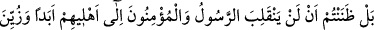
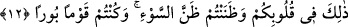

Defter gibi ol ve her zaman sâde yaşa.
İşte bu şekilde Allah sâdık olan dostlarını korur ve onlara yardım eder. Düşmanlarını
da yalnızlığa terkedip perişân eder.
Nakledilmiştir ki, Haccâc’ın adamları bir gün Hasan Basrî (r.a.)’yi arıyorlardı.
Hasan, Habîb A‘cemî’nin zâviyesine saklandı. Habîb’e: “Bugün Hasan’ı gördün mü?”
diye sordular, o da: “Gördüm” diye cevap verdi. “Nerede?” diye sorduklarında: “Bu
zâviyede” dedi. Adamlar zâviyeye girdiler Hasan’ı aradılar, fakat bulamadılar. -
Hasan,“bana yedi kere dokunmalarına rağmen yine de göremediler” demiştir.- Adamlar
dışarı çıktılar ve; “Ey Habîb, Haccâc size her ne yapıyorsa buna müstahaksınız, neden
yalan söylüyorsun” dediler. Habîb: “O benim önümde buraya girdi, eğer siz görememiş
ve bulamamışsanız benim suçum ne?” diye cevap verdi. Görevliler yeniden aradılar,
fakat kimseyi bulamadılar. Hasan zâviyeden çıktı ve: “Ey Habîb! Üstadlık hakkımı
gözetmeyip yerimi adamlara neden söyledin?” diye sordu. Habîb: “Ey Üstad! Doğru
söylemem sâyesinde kurtuldun, eğer yalan söyleseydim her ikimizi de yakalamışlardı”
diye cevap verdi.
Hâfız şöyle demiştir:
Doğru söylemede fecr-i sâdık gibi olmaya çalış
Ki sözün güneş gibi aydınlatsın,
Aksi halde fecr-i kâzib gibi
Yalancı ve siyah yüzlü olursun.
Hasan; “ne yaptın ki beni göremediler?” diye sorunca Habîb; “Dokuz kere Âyete’l-
Kürsî, dokuz kere Âmene’r-Rasûlü, dokuz kere de Kulhüvallâhu Ahad, okudum ve
dedim ki, ‘Allah’ım! Hasan’ı sana ısmarladım, onu muhafaza buyur!’ ”diye cevap verdi.
12. Aslında siz Peygamberin ve müminlerin ailelerine bir daha dönmeyeceklerini
sanmıştınız. Bu sizin gönüllerinize güzel göründü de kötü zanda bulundunuz ve
helâki hak etmiş bir topluluk oldunuz.
Rasûlullah (s.a.)’ın ve beraberindeki 1400 müslümanın müşrikler tarafından
köklerinin kurutulacağını zannederek, onlarla beraber olduğunuz takdirde bu musîbetin
sizin de başınıza geleceğinden korktunuz ve bu sebeble de geride kaldınız. Yoksa sizin
uydurduğunuz özürler sebebiyle geri kalmadınız.
Siz de kabul ediyorsunuz ki, o mü’minlerin durumuna hiç aldırış etmeden kendinizi